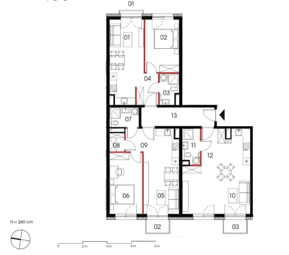

2025-09-01
Kojarzycie scenę z "The Big Short", w której to postać grana przez Steve Carell zaczyna rozumieć, że rynek nieruchomości jest w totalnej dupie na samym szczycie wielkiej bańki?
Przeglądając wolne mieszkania na stronie inwestycji Naramowicka 100 - póki co jedyne sprzedane mieszkania to te pod inwestycje. Na zdjęciu poglądowym kliknąłem sobie w budynek C - pierwszy z brzegu - 6 pięter. Jedyne sprzedane to kawalerki po 20 parę m2 (!) Oraz takie o to "inwestycje" - ~128m2 podzielone na 3 mieszkania.

Podsumowując - nikt tam nie kupuje mieszkań do mieszkania. Jeśli to nie jest szczyt bańki to co nim jest?